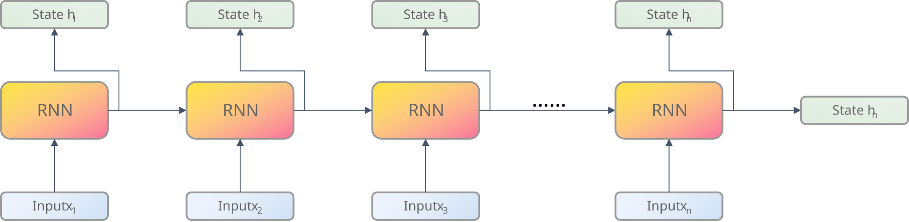
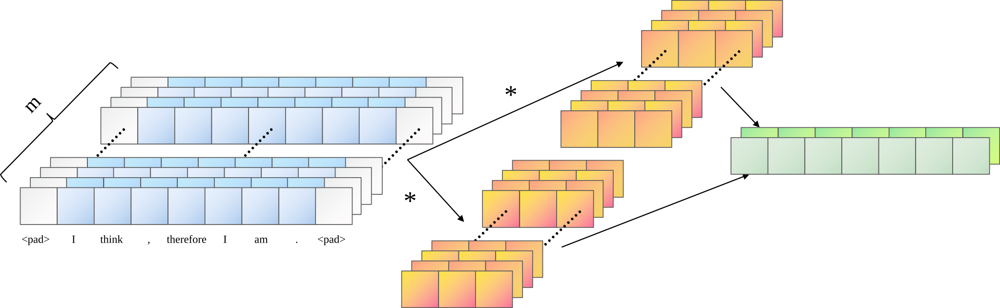
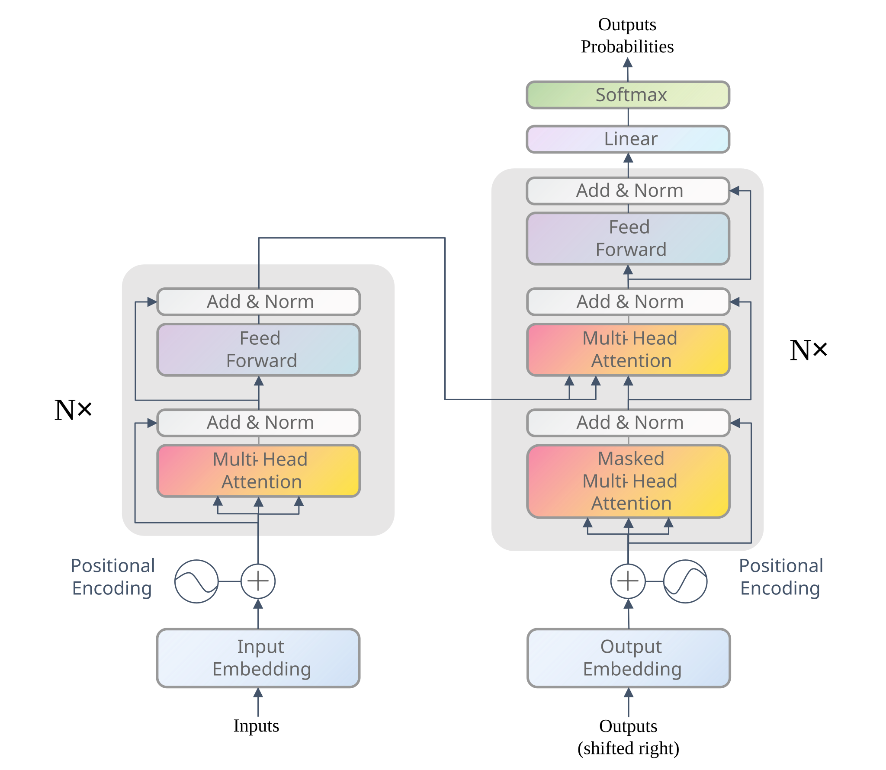

详解Transformer
详解Transformer
前言
自2017年问世以来，Transformer[1] 模型在 NLP 领域取得了巨大的成功，并在计算机视觉领域也取得了显著的进展。本文将详细介绍 Transformer 模型的结构、原理和实现，帮助读者更好地理解这一重要的深度学习模型。
背景
在 Transformer 之前，主流的序列转录模型（sequence transduction models）通常基于 RNN 或 CNN 构建。这类模型普遍采用编码器-解码器架构：编码器负责将输入序列处理成一组隐藏状态，而解码器则依据这些状态逐步生成目标输出序列。然而，RNN 和 CNN 在处理长序列时存在一些固有的问题，为了解决这些问题，Transformer 模型应运而生。
RNN
传统的序列转录模型通常使用 RNN（Recurrent Neural Network）来处理序列数据。RNN 通过递归的方式，将序列中的每个元素作为输入，并生成一个输出。

如图1所示，RNN 编码器将输入序列 $x_1, x_2, \ldots, x_n$ 逐个输入，并生成对应的隐藏状态 $h_1, h_2, \ldots, h_n$。每个隐藏状态 $h_i$ 都依赖于前一个隐藏状态 $h_{i-1}$ 和当前输入 $x_i$。这种递归的方式使得 RNN 能够捕捉序列中的长距离依赖关系。
循环神经网络（RNN）在处理长序列时存在几个固有缺陷。首先，如果只保留最后一个时间步的隐藏状态作为输出，序列前期的信息很容易在传递过程中丢失。虽然引入注意力机制、利用所有隐藏状态能缓解这一问题，但 RNN 的递归结构本身带来了更根本的挑战：每个隐藏状态的计算都必须依赖前一个状态，这种链式求导机制容易引发梯度消失或梯度爆炸，导致模型难以捕捉长距离依赖。此外，RNN 严格按时间步顺序（如从左到右）计算，这种串行特性使其在训练时很难进行并行加速。
CNN
为了克服 RNN 的局限性，人们尝试使用卷积神经网络（CNN）来处理序列数据。CNN 通过卷积操作捕捉局部特征，并且值得高兴的是，CNN 可以利用并行计算加速训练。

使用 CNN 的另一个好处是，输出的不同通道可以捕捉到不同的特征。例如，在图2中，我们可以期待输出的第一个通道可以捕捉到输入序列的某一种特征，而第二个通道可以捕捉到与之不同的另一种特征。
但是，CNN 的卷积核具有固定的感受野（receptive field），要想捕捉到长距离依赖，就必须堆叠多层卷积来逐步扩大感受野。将来自两个任意输入或输出位置的信号相关联所需的操作数量在位置之间的距离上呈线性增长[2]，这会使得学习远距离依赖变得十分困难。
模型结构
基于上述背景，Vaswani 等人提出了 Transformer 模型，该模型舍弃了 RNN 和 CNN，完全基于注意力机制，并同样采用编码器-解码器架构。

Encoder
原始的 Transformer 模型中，编码器由 $N=6$ 个相同的层堆叠而成，每个层包含两个子层：多头自注意力机制（Multi-Head Self-Attention）和前馈神经网络（Feed Forward Neural Network）。这两个子层之间使用了残差连接（Residual Connection）和层归一化（Layer Normalization）。
由于残差连接需要输入和输出具有相同的维度，因此 Transformer 编码器的输入和输出维度通常相同。在原论文中，输入和输出维度 $d_{\text{model}}$ 被设定为 512。
Decoder
解码器同样由 $N=6$ 个相同的层堆叠而成，每个层包含三个子层：带掩码的多头自注意力机制（Masked Multi-Head Self-Attention）、多头编码器-解码器注意力机制（Multi-Head Encoder-Decoder Attention）和前馈神经网络（Feed Forward Neural Network）。同样地，这些子层之间使用了残差连接和层归一化。
解码器在输出时，会通过一个线性层和一个 softmax 激活函数，将输出映射到词汇表大小 $V$ 的概率分布上。
关键机制
多头注意力
位置编码
层归一化
Transformer 处理的是变长序列，每个 batch 中样本的长度可能不同。如果使用 Batch Normalization (BN)，会出现两个问题：
- 训练时：BN 对同一个特征通道在不同样本之间做归一化，变长序列带来的 padding 会导致均值和方差抖动剧烈。
- 预测时：BN 依赖训练阶段累积的全局统计量（均值和方差），但不同长度的样本会混在一起，这些统计量很难准确反映序列的真实分布。
因此 Transformer 采用 Layer Normalization (LN)。LN 对每个样本自身的所有特征进行归一化，与 batch 中其他样本无关，既不受序列长度波动的影响，也不需要维护全局统计量，在预测时直接用当前样本的均值和方差即可。
LN 在 Transformer 中有两种常见实现方式，区别仅在于它放在残差连接的前面还是后面，二者的对比如下[3]：
-
Post-LN（原论文）：顺序是“子层 → 残差 → LayerNorm”
$$
\text{Output}=\text{LayerNorm}(x+\text{Sublayer}(x))
$$这种结构在层数较浅（如 6 层）时没问题，但随着层数加深，靠近输出层的梯度会偏大。如果一上来就用较大的学习率，训练很容易不稳定。所以 Post-LN 几乎必须搭配 学习率 warm‑up，等梯度稳定后再逐步增大学习率。这是它训练比较麻烦的地方。
-
Pre-LN（现代常见做法）：顺序是“LayerNorm → 子层 → 残差”
$$
\text{Output}=x+\text{Sublayer}(\text{LayerNorm}(x))
$$因为每层输入先被归一化，梯度的尺度会被自然地压缩，不会在深层爆炸或消失。因此 Pre-LN 对学习率更宽容，可以完全去掉 warm‑up，直接用一个较大的学习率从零开始训练，收敛更快，也省去了调 warm‑up 步数的麻烦。
warm‑up：在训练初期，学习率从一个很小的值逐渐增大到预设的最大值，避免模型一开始因为学习率过大而出现梯度爆炸或不稳定。
按位置的前馈神经网络
代码实现
Encoder
1 | class TransformerEncoder(nn.Module): |